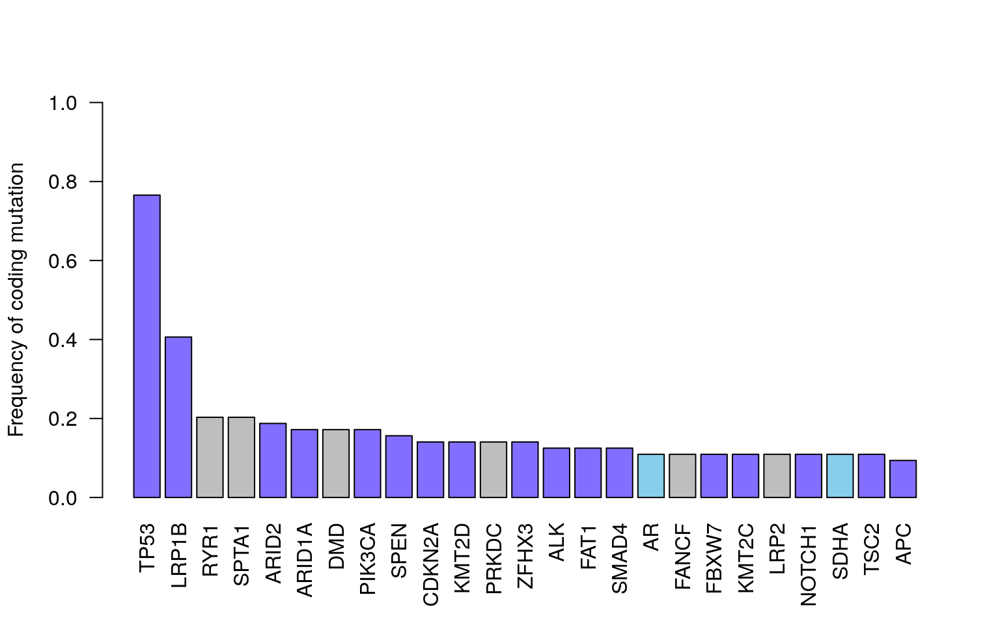
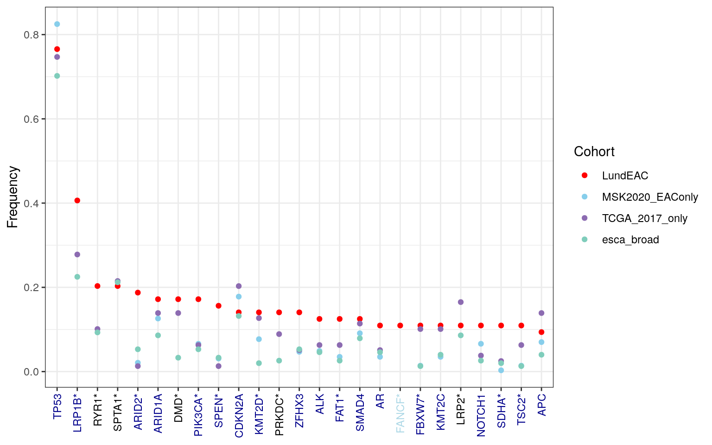
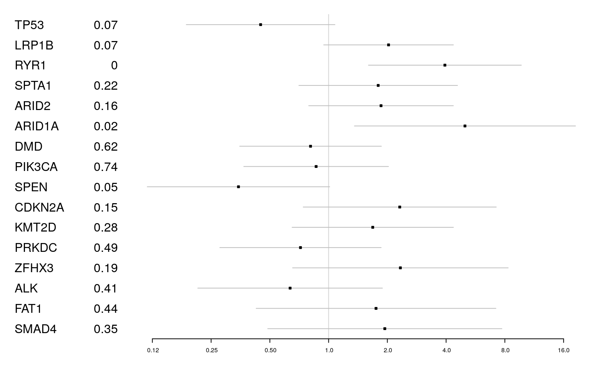
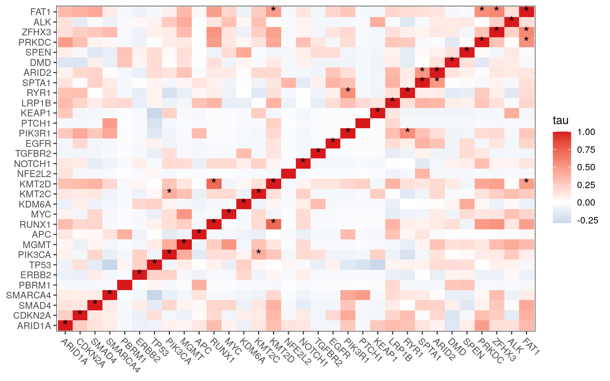

10 Summary of somatic variants
10.1 Most common variants
Below, we collapse the variants such that the most common in this cohort are reported.
- dark blue: Cosmic oesophagael specific
- light blue: Cosmic cancer genes
CodingVar <- "splice_(donor|acceptor|region)|stop|missense|frameshift|prime"
Nmut <- sapply(Maf2GRangesFiltgn, function(x) x[grepl(CodingVar, x$Consequence, ignore.case = TRUE)])
# Nmut=sapply(Maf2GRangesFiltgn, function(x) x[(which(!is.na(x$HGVSp)& substr(x$HGVSp, nchar(x$HGVSp), nchar(x$HGVSp))!="="))])
C2 <- do.call("c", Nmut)
df.Coding <- data.frame(CHR = seqnames(C2), POS = start(ranges(C2)), REF = C2$REF, ALT = C2$ALT, Gene = C2$Gene, HGVSp = C2$HGVSp, Consequence = C2$Consequence, Samp = C2$Samp)
Output1 <- acast(df.Coding[, c("Gene", "Samp")], Gene ~ Samp)
Nx <- names(FinalSomatic)[(!names(FinalSomatic) %in% colnames(Output1))]
Mat2 <- matrix(0, ncol = length(Nx), nrow = nrow(Output1))
colnames(Mat2) <- Nx
Output1 <- cbind(Output1, Mat2)
# calculate the frequency of variant, ignoring multiple occurrences in the same sample
Output1Freq <- rowSums(sign(Output1)) / ncol(Output1)
x1 <- rowSums(sign(Output1))
x1b <- rowSums(Output1[, -which(colnames(Output1) %in% highMB)])
x2 <- sort(x1, decreasing = T)
ColId <- ifelse(names(x2) %in% DriverEvents$Gene, "skyblue", "grey")
ColId[which(names(x2) %in% DriverEvents$Gene[which(!DriverEvents$Cons %in% c("Unknown", "Unknown-novel"))])] <- "slateblue1"
barplot(x2[1:25] / 64, las = 2, ylab = "Frequency of coding mutation", col = ColId, ylim = c(0, 1))
Figure 10.1: Frequency of coding mutations in assessed genes. Skyblue: cancer gene, Darkblue: oesoph specific
Note that TP53 is the most ccommon mutation across the cohort
10.2 Mutational frequencies compared to other cohorts (Fig2A)
Mutational frequency in our cohort was comparable to:
- MSK2020
- TCGA ESCA legacy
- TCGA 2017 publication
- DFCI2013 Nature Genetics 2013
# Load comparison cohort data files
comp_cohort_files <- AllDat$CompCohort
comp_cohort_names <- unlist(strsplit(basename(unlist(comp_cohort_files)), "_Mutated_Genes.txt"))
# Read and store comparison data in a named list
comp_data_list <- lapply(comp_cohort_files, function(f) read.delim(f, sep = "\t"))
names(comp_data_list) <- comp_cohort_names
# Initialize frequency table with current cohort data
df1 <- data.frame(Genes = names(Output1Freq), LundEAC = Output1Freq)
# Merge frequencies from other cohorts
for (cohort_name in names(comp_data_list)) {
cohort_df <- comp_data_list[[cohort_name]]
# Clean percentage strings and extract frequencies
cohort_freqs <- cohort_df %>%
dplyr::select(Gene, Freq) %>%
dplyr::mutate(!!cohort_name := as.numeric(sub("%", "", Freq)) / 100) %>%
dplyr::select(-Freq)
df1 <- merge(df1, cohort_freqs, by.x = "Genes", by.y = "Gene", all.x = TRUE)
}
# Order by current cohort frequency
df1b <- df1[order(df1$LundEAC, decreasing = TRUE), ]
# Frequency check for variants outside top 25 (e.g., > 15% in other cohorts)
# Using arr.ind=T to find indices where frequency > 0.15
high_freq_others <- which(df1b[-c(1:25), -1] > 0.15, arr.ind = TRUE)
# Do a proportion test to check if there is a difference in frequency.
# cohort_sizes: LundEAC (64), MSK2020 (286), TCGA (79), DFCI (151)
cohort_sizes <- c(64, 286, 79, 151)
calculate_prop_test <- function(row) {
# Extract frequencies and convert to counts
freqs <- as.numeric(row[2:5])
freqs[is.na(freqs)] <- 0
counts <- freqs * cohort_sizes
# Run proportion test
tryCatch(
{
prop.test(counts, cohort_sizes)$p.value
},
error = function(e) NA
)
}
pval_list <- apply(df1b, 1, calculate_prop_test)
names(pval_list) <- df1b$Genes
# Identify genes with significant differences after FDR correction
sig_genes_fdr <- names(which(p.adjust(pval_list, method = "fdr") < 0.05))
# Prepare top 25 genes for plotting
df_plot <- df1b[1:25, ]
df_plot$Genes_fmt <- as.character(df_plot$Genes)
df_plot$Genes_fmt[df_plot$Genes %in% sig_genes_fdr] <- paste0(df_plot$Genes[df_plot$Genes %in% sig_genes_fdr], "*")
melted_freqs <- melt(df_plot[, !colnames(df_plot) %in% "Genes"], id.vars = "Genes_fmt")
melted_freqs$Genes_fmt <- factor(melted_freqs$Genes_fmt, levels = df_plot$Genes_fmt)
# Define color coding for gene labels
gene_colors <- ifelse(df_plot$Genes %in% DriverEvents$Gene, "darkblue",
ifelse(df_plot$Genes %in% CmcOesoph$Gene.Symbol, "blue",
ifelse(df_plot$Genes %in% CosmicList$Gene.Symbol, "lightblue", "black")
)
)
ggplot(melted_freqs, aes(x = Genes_fmt, y = value, col = variable)) +
geom_point() +
scale_color_manual(values = c("red", "skyblue", "#8c6bb1", "#7fcdbb")) +
labs(x = "Gene", y = "Frequency", color = "Cohort") +
theme_bw() +
theme(
axis.text.x = element_text(angle = 90, hjust = 1, vjust = 0.5, color = gene_colors),
axis.title.x = element_blank()
)
Figure 10.2: Comparison of frequency of mutations in current cohort with other published methods
# Generate and save summary table for export
df_mut_freq <- df1b
df_mut_freq$is_oesophageal <- df_mut_freq$Genes %in% CmcOesoph$Gene.Symbol
df_mut_freq$is_predicted_driver <- df_mut_freq$Genes %in% DriverEvents$Gene
df_mut_freq$p_value <- pval_list[match(df_mut_freq$Genes, names(pval_list))]
df_mut_freq$fdr_p_value <- p.adjust(pval_list, method = "fdr")[match(df_mut_freq$Genes, names(pval_list))]
df_mut_freq$is_significant_fdr <- df_mut_freq$Genes %in% sig_genes_fdr
write.csv(df_mut_freq, file = "output/Fig2A_frequencies_stats.csv", row.names = FALSE)The significant genes have a p-value less than 0.05 based on a proportionality test (indicated with an asterisk * above), and thus appear at a different frequency compared to other public data.
10.3 Association of mutational status with outcome
Create a univariate cox model, looking at each mutation independently but accounting for age, stage, location, sex etc:
- TP53 associated with good outcome
- RYR1, ARID1A and CDKN2A with poorer outcome
# Select genes with at least 8 mutations for univariate survival analysis
min_mutations <- 8
frequent_genes <- names(x2)[x2 >= min_mutations]
# Prepare data frame for survival analysis
# Combine clinical data (S2) with mutation status for selected genes
mutation_status <- t(sign(Output1[frequent_genes, match(S2$SAMPLE_ID, colnames(Output1)), drop = FALSE]))
survival_data <- cbind(S2, mutation_status)
# Define survival object (using follow-up time and deceased status)
surv_obj <- Surv(survival_data$Follow.up.Survival..months., survival_data$Alive == "Deceased")
# Run Cox proportional hazards model for each gene independently
# Adjusting for clinical covariates: Age, Stage, Grade, Location, Gender, LN.Ratio
run_cox_model <- function(gene_name, data, surv) {
# Formula: clinical covariates + the gene's mutation status
formula_str <- paste0("surv ~ log(Age.at.op) + Stage + Grade + Location + Gender.Male.1..F.0 + LN.Ratio + `", gene_name, "`")
tryCatch(
{
model <- coxph(as.formula(formula_str), data = data)
summary_model <- summary(model)
# Extract coefficients and confidence intervals for the target gene (last row)
coef_data <- summary_model$coefficients
conf_int <- summary_model$conf.int
last_row <- nrow(coef_data)
data.frame(
Gene = gene_name,
Coeff = coef_data[last_row, "exp(coef)"], # Hazard Ratio
Lower = conf_int[last_row, "lower .95"],
Upper = conf_int[last_row, "upper .95"],
P = coef_data[last_row, "Pr(>|z|)"],
Psum = summary_model$logtest["pvalue"],
stringsAsFactors = FALSE
)
},
error = function(e) {
message(paste("Error modeling gene", gene_name, ":", e$message))
NULL
}
)
}
# Iterate over genes and combine results into a single data frame
cox_results <- lapply(frequent_genes, run_cox_model, data = survival_data, surv = surv_obj) %>%
dplyr::bind_rows()
# Clean up result types for presentation
cox_results$Coeff <- as.numeric(cox_results$Coeff)
cox_results$Lower <- as.numeric(cox_results$Lower)
cox_results$Upper <- as.numeric(cox_results$Upper)
cox_results$P <- round(as.numeric(cox_results$P), 2)
# Visualize results using a forest plot
forestplot(
cox_results[, c("Gene", "P")],
cox_results$Coeff,
cox_results$Lower,
cox_results$Upper,
xlog = TRUE,
boxsize = 0.1
)
10.4 Co-occurrence matrix for genes:
Determine whethere there is any border-line significant associations which can explain lower than expected number of mutations, or convergence in mutational profile.
The plot below shows association between PIK3CA and KMT2C; RUNX1 and KMT2D and MGMT and PIK3CA
# l2=match(test, rownames(Output1))
l2 <- c(match(Allg, rownames(Output1)), match(frequent_genes, rownames(Output1)))
t2 <- Output1[na.omit(unique(l2)), ]
Mx1 <- cor(t(t2))
## calculate a fisher's test for co-occurence:
##
# FT=fisher.test(t(t2))
pvals <- sapply(1:nrow(t2), function(x) sapply(1:nrow(t2), function(y) fisher.test(table(t2[x, ], t2[y, ]))$p.value))
# diag(pvals)=1
pvals2 <- p.adjust(pvals, "fdr")
pvals3 <- matrix(pvals2, nrow = nrow(pvals))
colnames(pvals3) <- colnames(Mx1)
rownames(pvals3) <- rownames(Mx1)
dfnew <- melt(Mx1)
dfm2 <- melt(pvals3)
dfnew$p <- dfm2$value
dfnew$sig <- ifelse(dfnew$p < 0.1, "*", ifelse(dfnew$p < 0.05, "**", ""))
ggplot(data = dfnew, aes(x = Var1, y = Var2, fill = value)) +
geom_tile() +
scale_fill_gradient2(low = "#2C7BB6", mid = "white", high = "#D7191C") +
geom_text(aes(label = sig), color = "black", size = 5) +
labs(y = NULL, x = NULL, fill = "tau") +
theme_bw() +
theme(axis.text.x = element_text(angle = -45, hjust = 0))